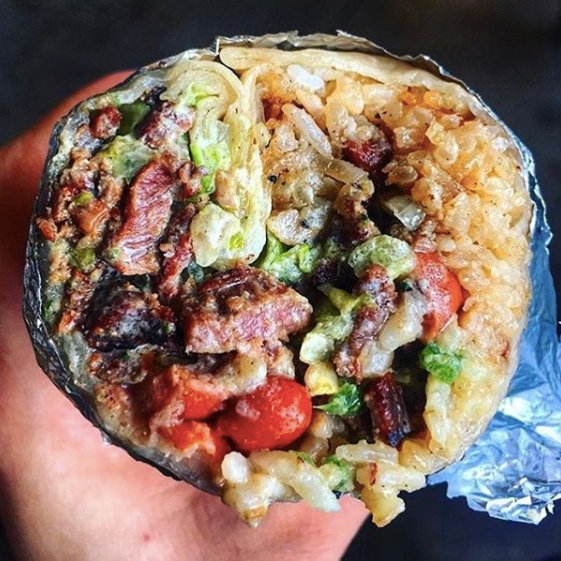
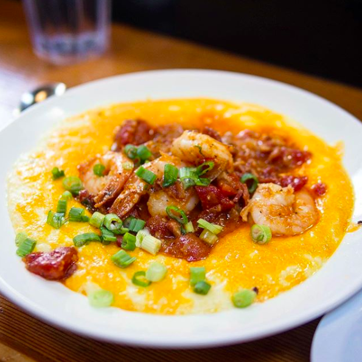
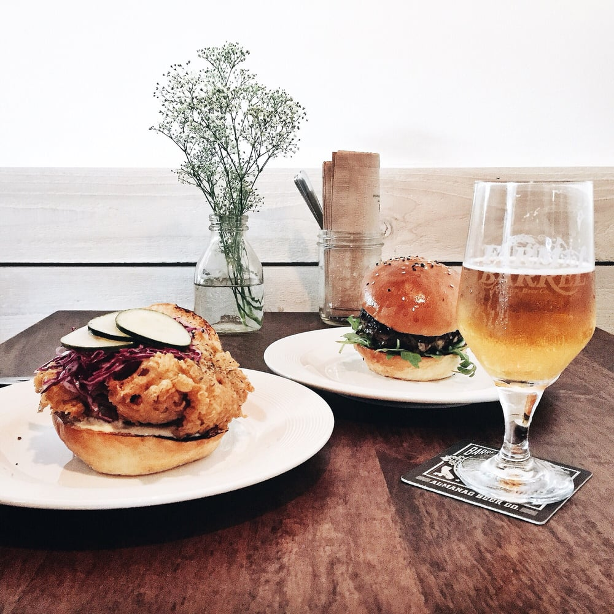
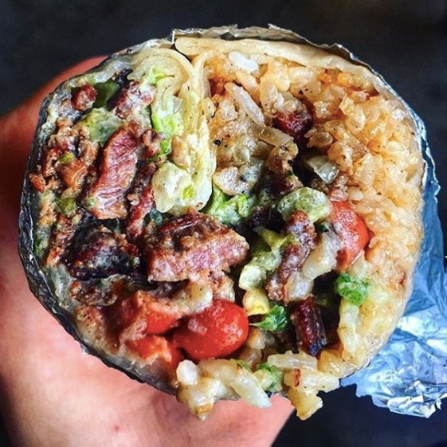
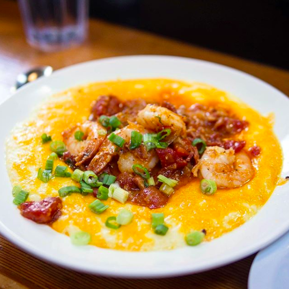
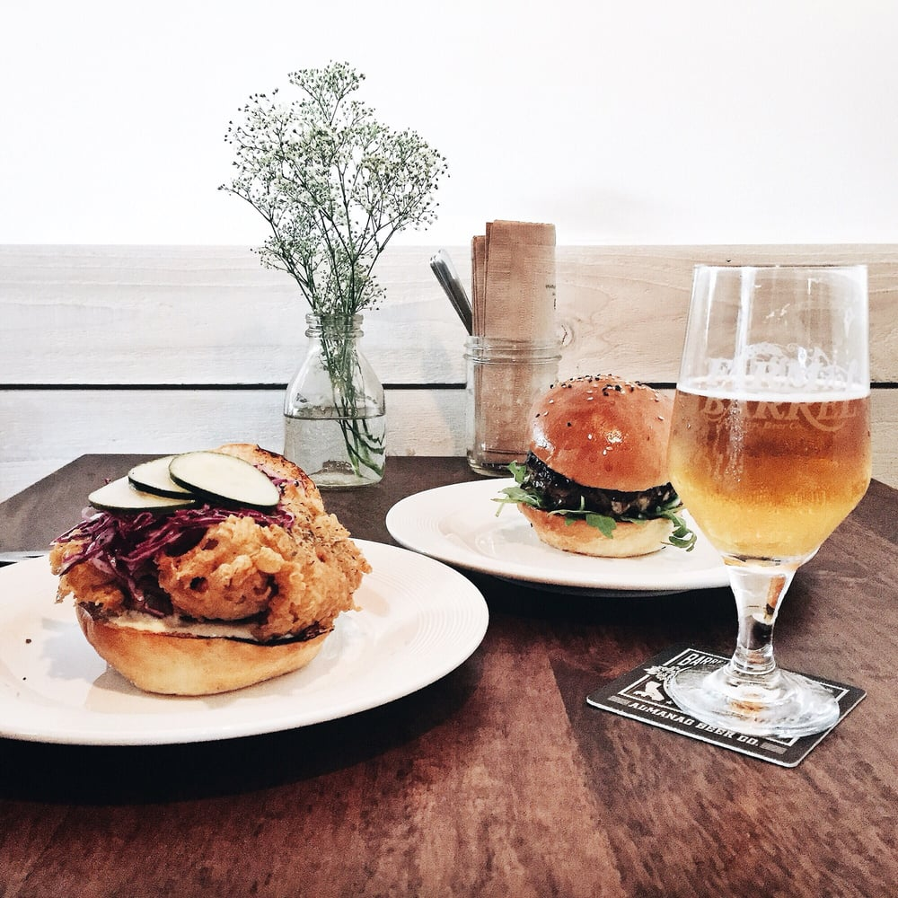

Itinerary
Link to Sheet
Where to Eat
*All meals $20 per person or less
 





Yamo - Burmese
Yamo is a true hole in the wall, with less than 10 seats, and absolutely no ambiance. Yes, it has an open kitchen but don’t be fooled. All this means it that you’ll feel all the greasiness from the kitchen cling to you. But the ridiculously cheap and delicious food will have you forget about all that.
Reservations: No
Wait times: Long, call in your order for pick up!
What to order:
1. Tea salad - a Burmese classic with tea leaves, cabbage, tomato, shallots, dried shrimp and a mixture of fried nuts and seeds. This dish is an explosion of savory, sweet, sour, bright flavors and great crunchy texture.
2. Yamo house noodles with beef - Yes, you can order this with pork or chicken, but beef is the way to go. Not a huge portion of meat, but what you get is tender and flavorful beef. It’s perfect with the garlic, scallion, cilantro, and noodles
Notes: Cash only, do not come here if you’re looking for amazing service or turned off by oily foods
Lai Hong Lounge - Dim Sum (Weekends only)
Offering a proper and thorough dim sum offering in the city.
Reservations: Yes, for groups of 4 or more
Wait times: 30+ minutes unless you go right when they open or are willing to split a table with strangers
What to order:
1. All the classics: har gow, shrimp noodle roll, baked char siu buns, pork & shrimp siu mai, pan fried turnip cake, etc.and
2. Dim Sum Sampler is super instagram worthy with bunny shaped shrimp dumplings and piggy shaped custard buns. Colors are brilliantly appetizing
Blue Bottle Coffee
The Bay Area is the home of Blue Bottle, and it’s loved by locals and visitors alike. The knowledgable staff can help brew you your perfect cup of coffee.
Reservations: No
Wait times: Ferry building location is almost always long except in the evenings
What to order:
1. New Orleans Style Iced Coffee - to many Blue Bottle’s New Orleans Style Iced Coffee is liquid crack. This creamy, lightly sweetened iced coffee is flavored with earthy chicory. You can ask for a sample before deciding!
2. Affogato - this italian classic is only available at the Ferry Building location because you can order a scoop from Humphrey Slocombe whom they directly face.
Notes: None of the locations are coffee shops to work out of, without outlets or wifi. Is there already a Blue Bottle in your city? Try Sightglass instead!
Boba Guys
Reservations: No
Wait times: Weekdays almost none, weekends sometimes closer to 30 minutes
Notes:
Italian Homemade Company - Italian
Reservations: No, order at the counter
Wait times: Almost none
What to order:
1. Pesto - with a fragrant bouquet of fresh herbs, you’ll know this isn’t some store bought sauce. Goes great with their pillowy gnocchi
2. Burrata salad - served with a drizzle of balsalmic, quality olive oil, cherry tomatoes, and a generous portion of arugula, the creamy burrato really shines
3. Lasagna - people are ride or die with this lasagna. First off, the portion can easily feed two for under $15. There is a limited quantity of lasagna every day! The vegetarian lasagna is very mediocre.
4. Burrata salad - fresh
Notes: the meatballs are almost the size of baseballs; a great deal. BUT they are very bread-crumby, so they’re very meatloaf like. Skip the bread. It is piadina which is a thin flatbread similar to Indian Roti.
Basik Cafe
After eating your way through the city, this is a great light breakfast full of antioxidants and micronutrients to keep your body fueled.
Reservations: No
Wait times: Weekdays almost none, weekends sometimes closer to 30 minutes
What to order: Any of their acai bowls. Our favorite is the Puna.
Notes: They come in two sizes. The smaller size is perfect for one. The staff are really friendly and happy to do substitutions.
Roli Roti
Good things come to those who wait. Yes, Roli Roti always has an insane line, but it’s more than worth it
Reservations: No
Wait times: 30-45 minutes at the Ferry Building, about half that if at the Civic Center
What to order:
1. The porchetta sandwich - juicy, slow roasted pork with crispy skin, sprinkled with herb salt, house made onion marmalade, and baby arugula on fresh baked Acme bread. As you bite down, savor the fresh baked bread with just enough chew and distinction to support this substantial sandwich. Crisp skin shatters and gives way to moist, flavorful porchetta smeared with the sweet but savory onion marmalade.
2. Roasted potatoes - basted with pork and chicken drippings, these are rich, perfectly tender fingerling potatoes seasoned with fresh rosemary. The sandwich is quite hefty, but if you’ve got a big appetite, these are perfect.
Notes: They have a very limited menu, look elsewhere at the farmers’ market if you want something else to round out your meal
Senor Sisig - Filipino
Senor Sisig has garnered such a following, you can find where they’ll be here (http://www.senorsisig.com/#find-us). Lucky for you, this food truck is actually multiple food trucks, so you can find it throughout the city.
Reservations: No
Wait time: Lines move fast, but expect around 15 minutes till you get your food
What to order:
1. California Sisig Burrito - hands down no question, this is what to order. Crisp fries, guacamole, fresh pico de gallo, adobo garlic rice, and savory marinated pork sisig all wrapped up in the perfect bite. Sub the cilantro cream sauce for the sour cream and ask for the spicy sauce on the side. It’s not that spicy but adds great flavor.
2. Ube Alfajores - if you’re used to eating ube, you may be disappointed because the flavor isn’t super pronounced. However, if ube is new to you, don’t miss an opportunity to try this unique cookie. Ube is a purple yam that tastes like coconut and vanilla.
Note: The location at Mission and 10th is the least busy; Spark Social is the busiest.
Brenda’s Meat and Three - Soul
Sister restaurant of the famous Brenda’s Soul Food, this newer location shares most of the same menu items, but without the long waits!
Reservations: No
Wait time: They aren’t busy on weekdays during the day, otherwise the wait can be very long but worth it!
Ambiance: Very casual and laidback
What to order:
1. Watermelon sweet iced tea - a twist on a classic
2. Crawfish beignet- truly a specialty. Sure, you can get the flight of beignet, but these are the real star. Perfectly fried, pillowy beignet dough holds a molten, creamy, slightly cheesy crawfish filling. Every order comes with three beignet.
3. Crispy pork belly - a braised and then fried pork belly has the perfect balance of fattiness and saltiness to elevate a bowl of cheesy grits. The spicy onion relish isn’t spicy, but is a nice complement to the rich dish.
4. Anything off the daily specials, notably the Bananas Foster
Notes: Portions are very big and shareable. Skip the BFC as good as it sounds, it is very hit or miss with some people getting dry pieces. If you are gonna take your chances, ask for all dark meat to stay safe.
Rove Kitchen - American
Dare I say the best fried chicken sandwich in the city? Limited menu, but when everything is delicious, how can you go wrong?
Reservations: No
Wait time: Dinner on a weekend, around 30 minutes; weekday, less than 15 minutes.
Ambiance: Casual but intimate with high stool seating, a TV, and small bar. Not great for large parties.
What to order:
1. Buttermilk fried chicken sandwich, served with a fresh cabbage slaw, house made pickles, anchovy aioli, and their baked in house buns. Crispy, but not at all greasy, you’ll love this classic. Their tender brioche buns are baked fresh throughout the day.
2. Rove burger, a classic burger made with a short rib blend, topped with fresh arugula, caramelised onion jam, and their baked in house buns. Juicy, meaty, and perfectly melty. Ask nicely and you might get a free complimentary side of their house made pickles to cut through this deliciously indulgent burger.
3. Neither comes with a side of fries, but they are worth the splurge. Crispy, thin but not quite shoestring, fries are tossed with garlic and fresh parsley. They describe the fries as a “sharing portion,” but you’ll definitely need to order your own.
Note: Great beer menu
Where to Stay
San Francisco is very dense, only 7 miles by 7 miles. But it’s even denser than that! Certain areas are very residential, so if you want to experience true city life, I’d recommend staying within the shaded area:

This area is pretty walkable with lots of shops and restaurants and sites to see.
Best
Chinatown and Nob Hill. With its very central location, you’ll be close to everything - less than a 15 minute walk to cable cars, Union Square, North Beach, and the Ferry Building. Chinatown also has some of the greatest hotel deals. Our top pick, the newly renovated Grant Hotel. It’s on the same block as the Ritz Carlton. The Grant Hotel is perfect for someone who doesn’t plan on staying in their hotel room for the majority of their vacation. Don’t expect amenities like a spa or fitness center, but it’s clean, in a relatively safe neighborhood, and extremely walkable. If you prefer to go the Airbnb route, our recommendation is this gorgeous condo in Nob Hill with an amazing location, washer and dryer, and insane rooftop views.Worst
You see that big hole I didn’t shade in on the map? That’s the Tenderloin. This is one of the few areas I’d very much avoid. Crime and drugs run rampant in the Tenderloin, even during the day. A lot of hotels and Airbnbs will blatantly lie about their location and call it the Tendernob, Union Square, Lower Nob Hill. You’ll also notice the price seems too good to be true, and it is. It is VERY CLOSE to Union Square which is also what it makes it seem so enticing.The second is Dogpatch. While it doesn’t look very far from the action on a map, it’s not walkable, and you’ll be racking up a lot of Uber/Lyft trips. You won’t save as much as you think. More and more retail developments are cropping up, but it’ll be a few years before this is a neighborhood worth staying in.
How to get around
SF is very dense, so walking is often a great option. However, be wary of our hills. The highest clocking in at 31.5%, a real workout! If you’re using Google Maps to navigate your direction, a trick is to set it to bicycle mode because Google Maps registers steepness and can direct an easter route!
Speaking of bicycling, do NOT rent a bicycle in SF expecting to use it as your primary means of transportation because the hills greatly limit where you can go on a bike. Biking also isn’t the safest. There aren’t bike lanes in most areas and because not that many people cycle, drivers aren’t accustomed to looking out for you. It is illegal to bicycle on sidewalks. If you do decide to rent a bicycle, I’d recommend staying along the Embarcadero and Market Street.
Most importantly, Uber and Lyft reign supreme. If you’ve never used these rideshare apps, you definitely should. If you’ve used these apps before, know that there are so many drivers in SF, you can expect really affordable rates and short wait times. I’d highly recommend using these apps particularly going to and from the airport.
Public transportation does exist, and I’m all for saving the environment. BUT, it’s very disorganized, often behind schedule, and not the cleanest or safest means. If you’re on a super tight budget, do it. But a Uber Pool or Lyft Line for two people is often $5.50, and two tickets for the muni is $4.50, so you’re not saving that much.
Sites to see
Things to do